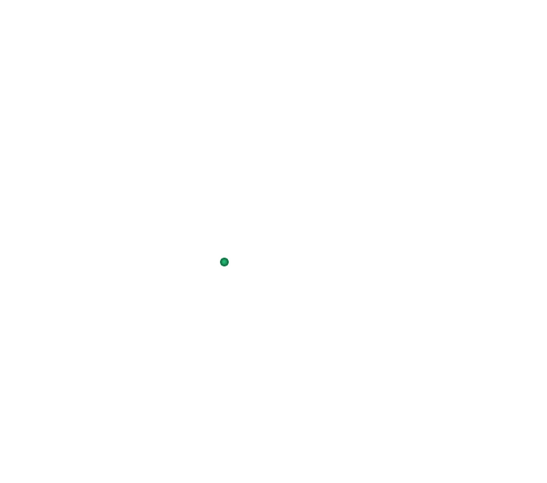
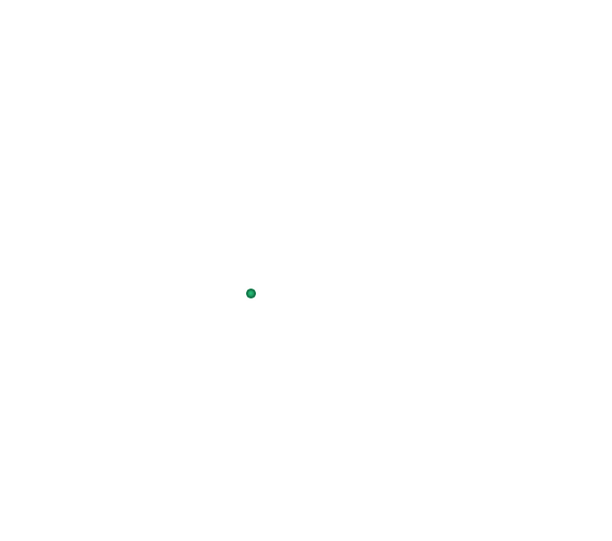
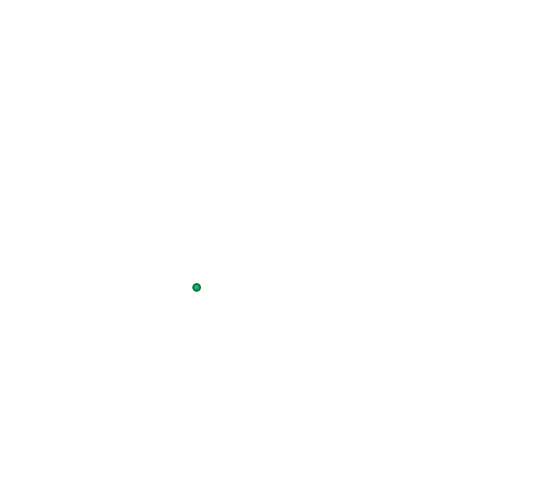
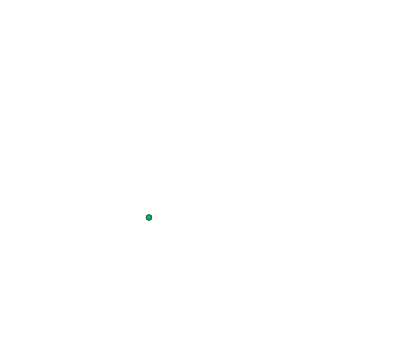
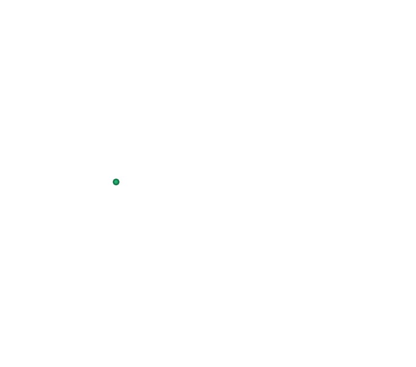
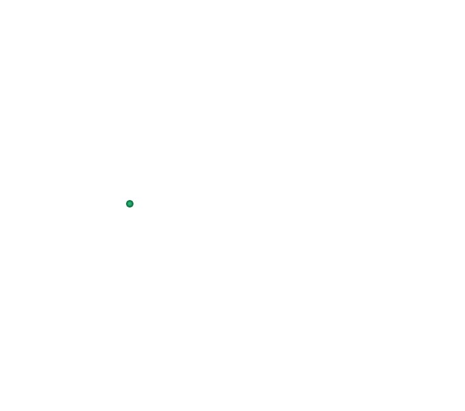

Эпидавр
 



 



 



Επίδαυρος
Γενικές πληροφορίες:
- Χώρα: Ελλάδα
- Έκταση: 338.1 τ.χλμ.
- Πληθυσμός: 8 710 (2011)
- Περιφέρεια: Πελοποννήσου
Η σαγηνευτική Σειρήνα του Σαρωνικού
Στο άκουσμα της λέξης Επίδαυρος, το πρώτο πράγμα που έρχεται αναμφισβήτητα στο μυαλό όλων είναι το Αρχαίο Θέατρο (περ. 340-330 π.Χ.), περίφημο μνημείο της παγκόσμιας πολιτιστικής κληρονομιάς, και χώρο ιδιαίτερα σημαντικό στο διάβα της ιστορίας. Εδώ κατά την αρχαιότητα, παρακολουθούσαν θεατρικές παραστάσεις οι ασθενείς του Ασκληπιού ενώ στη σύγχρονη εποχή, από τη δεκαετία του ‘50 και μέχρι σήμερα κάθε καλοκαίρι ανεβαίνουν συγκλονιστικές παραστάσεις αρχαίου θεάτρου στο πλαίσιο του ομώνυμου Φεστιβάλ.
Ωστόσο, η ευρύτερη περιοχή της Επιδαύρου, στην Ανατολική παράκτια Αργολίδα έχει να σας προσφέρει πολλά περισσότερα! Υπέροχες παραλίες κάτω από τη σκιά καταπράσινων πεύκων, βουτιές και snorkelling σε βυθισμένες πολιτείες της αρχαιότητας, υπέροχα μονοπάτια για πεζοπορία και διαδρομές ανάμεσα σε αρχαία ερείπια, πορτοκαλεώνες και ελαιώνες καθώς και παραδοσιακά ταβερνάκια για φρέσκους ψαρομεζέδες του Σαρωνικού και προϊόντα της Αργολικής γης.
Ταξίδι στη γη του Ασκληπιού
Κατά την παραμονή σας στην ευρύτερη περιοχή της Επιδαύριας γης επισκεφθείτε την κοσμοπολίτικη Παλαιά Επίδαυρο, με τη γραφική της προκυμαία, για ομορφες βόλτες πλάι στο κύμα για να επισκεφθείτε το μεγαλοπρεπές στολίδι της, το Μικρό Θέατρο της Επιδαύρου, όπου τον Ιούλιο δίνονται μουσικές παραστάσεις. Εδώ θα βρείτε τα περισσότερα καταλύματα της περιοχής για τη διαμονή σας αλλά και ταβερνάκια που θα γευτείτε τις φρέσκες ψαρονοστιμιές.
Περπατήστε μέχρι το Νησί, όπως ονομάζεται η χερσόνησος που διχοτομεί την παραλία της Παλαιάς Επιδαύρου, όπου θα θαυμάσετε τα απομεινάρια της αρχαίας Ακρόπολης και των Ρωμαϊκών τειχών, ερείπια παλατιού και σπιτιών, στύλους Δωρικού ναού, Μυκηναϊκούς τάφους με φόντο το γαλάζιο του Σαρωνικού. Σας προτείνουμε να ξεκινήσετε με αφετηρία το λιμάνι της Παλαιάς Επιδαύρου ένα χαλαρωτικό περίπατο νωρίς το πρωί, ή λίγο πριν το ηλιοβασίλεμα για μια πολύ σύντομη πεζοπορία στη φύση. Η διαδρομή είναι περίπου 2 χλμ. και καθόλου κουραστική.
Επισκεφθείτε επίσης το Λυγουριό, ένα μικρό χωριό με παραδοσιακά καφενεία, μαγαζάκια και την πλακόστρωτη πλατεία του. Ένα γεύμα στις ταβέρνες του αμέσως μετά την παράσταση στο αρχαίο Θέατρο αποτελεί must και παράδοση που κρατάει δεκαετίες. Εδώ μπορείτε να επισκεφθείτε το Μουσείο Κωτσιομύτη Φυσικής Ιστορίας αλλά και να περπατήσετε στο ψηλότερο σημείο του οικισμού για να δείτε τα ερείπια από τα τείχη της αρχαίας πόλης Λήσσας. Μη παραλείψετε να επισκφεθίτε το καθολικό της Ιεράς Μονής Αγνούντος, για να δοκιμάσετε λουκουμάκι που θα σας προσφέρουν οι μοναχές. Η ίδρυσή του ανάγεται στον 11ο μ.Χ. με τεχνοτροπία Βυζαντινή. Ο ναός είναι αφιερωμένος στην Κοίμηση της Θεοτόκου και γιορτάζεται στις 15 Αυγούστου, με εκατοντάδες πιστούς από όλη την Ελλάδα.
Μην χάσετε:Στο καταπράσινο Φαράγγι του Βόθυλα, κοντά στη Νέα Επίδαυρο, να κάνετε διάσχιση που αποτελεί την απόλυτη μυστική γωνιά της περιοχής, ιδανική για φυσιολάτρες.
Στη “βυθισμένη πολιτεία” ή αλλιώς Ατλαντίδα της Αργολίδας, με θέα το επιβλητικό ηφαίστειο των Μεθάνων για ατελείωτες βουτιές και snorkelling, όλη μέρα. Πρόκειται για τμήμα της αρχαίας πόλης που έχει βυθιστεί σε μικρή απόσταση από την ακτή. Μυκηναϊκοί τάφοι, αμφορείς και τείχη που διακρίνονται πεντακάθαρα ακόμα και με γυμνό μάτι. Σε κάποια σημεία σώζεται ακόμα και ο αρχαίος λιμενοβραχίονας. Μπορείτε να κολυμπήσετε στα αρχαία ερείπια, να παρατηρήσετε τα πολύχρωμα ψάρια. Προσοχή, να φοράτε παπούτσια για τη θάλασσα ή βατραχοπέδιλα, καθώς ο βυθός είναι γεμάτος αχινούς. Η εμπειρία είναι μοναδική!
Η Επίδαυρος προσφέρεται επίσης για πτήσεις με παραπέντε και ποδηλατάδα για να απολαύσετε τις ομορφιές της, από ψηλά ή με ορθοπεταλιές!
Эпидавр
Основная информация:- Страна: Греция
- Площадь: 338.1 кв.км.
- Население: 8 710 (2011)
- Регион: Пелопоннес
Соблазнительная сирена Саронического залива
Услышав слово Эпидавр, первое, что, несомненно, приходит каждому на ум, - это Древний театр (ок. 340-330 до н.э.), известный объект Всемирного наследия и объект, особенно важный в истории. Здесь в древние времена пациенты Эскулапа посещали театральные представления, в то время как в наше время, с 50-х годов и по сегодняшний день каждое лето в рамках одноименного фестиваля ставятся сенсационные спектакли древнего театра.
Однако более обширная территория Эпидавра на восточном побережье Арголиды может предложить гораздо больше! Прекрасные пляжи в тени зеленых сосен, дайвинг и сноркелинг в затонувших государствах древности, замечательные пешеходные тропы и маршруты среди древних руин, апельсиновых и оливковых рощ, а также традиционные таверны, где подают блюда из свежей рыбы Саронического залива и продукты Арголийской земли.
Путешествие в страну Асклепия
Во время вашего пребывания в более широком районе Эпидавра посетите многонациональный Старый Эпидавр с его живописной набережной, совершите прекрасные прогулки по морю, чтобы посетить его величественную жемчужину, Малый театр Эпидавра, где в июле проходят музыкальные представления. Здесь вы найдете большинство мест для проживания и таверны, где вы сможете отведать блюда из свежей рыбы.
Прогуляйтесь до острова, так называется полуостров, разделяющий пляж Старого Эпидавра, где вы полюбуетесь остатками древнего Акрополя и римскими стенами, руинами дворца и домов, колоннами дорического храма, микенскими гробницами на фоне синего Саронического залива. Мы рекомендуем отправиться из порта старого Эпидавра на расслабляющую прогулку ранним утром или незадолго до заката для очень короткой прогулки на природе. Маршрут составляет около 2 км. и совсем не утомителен.
Также посетите Лигурио, небольшую деревню с традиционными кафе, магазинами и мощеной площадью. Трапеза в его тавернах сразу после представления в Древнем театре - обязательное условие и традиция, которая длится десятилетиями. Здесь вы можете посетить Музей естественной истории Коциомитиса и прогуляться до самой высокой точки поселения, чтобы увидеть руины стен древнего города Лисса. Не забудьте посетить католикон Святого монастыря Агноунтос, чтобы отведать рахат-лукум, который вам предложат монахини. Его основание относится к 11 веку нашей эры с византийским стилем. Церковь посвящена успению Пресвятой Девы Марии и празднуется 15 августа с участием сотен верующих со всей Греции.
Не пропустите:В зелёном ущелье Вотилас, недалеко от Неа Эпидаврос, сделайте переход, который является абсолютно секретным уголком этого района, идеально подходящим для любителей природы.
В «затонувшем состоянии» или Атлантиде Арголиды, с видом на внушительный вулкан Метана для бесконечных погружений и сноркелинга в течение всего дня. Это часть древнего города, затонувшего недалеко от побережья. Микенские гробницы, амфоры и стены, которые можно увидеть даже невооруженным глазом. В некоторых местах сохранился даже древний причал. Вы можете искупаться в древних руинах, понаблюдать за разноцветными рыбками. Будьте осторожны, надевайте морскую обувь или ласты, так как морское дно полно морских ежей. Это уникальный опыт!
Эпидавр также предлагается для полетов на параплане и велосипедах, чтобы насладиться его красотами, сверху или "με ορθοπεταλιές" (техника езды на велосипеде стоя для преодоления препятствий - "педалирование")!